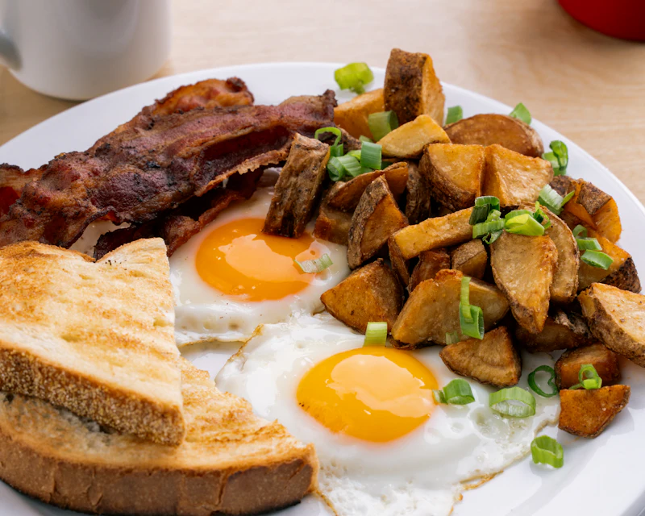
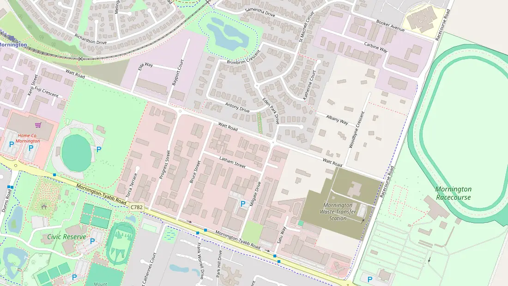

- Weekdays from 6am, Saturdays from 7am, until 3pm
- 98 Watt Road, Mornington VIC 3931
Hours and address
| Monday | 6am to 3pm |
|---|---|
| Tuesday | 6am to 3pm |
| Wednesday | 6am to 3pm |
| Thursday | 6am to 3pm |
| Friday | 6am to 3pm |
| Saturday | 7am to 3pm |
| Sunday | Closed |

© OpenStreetMapOpen in OpenStreetMap98 Watt RoadMornington VIC 3931